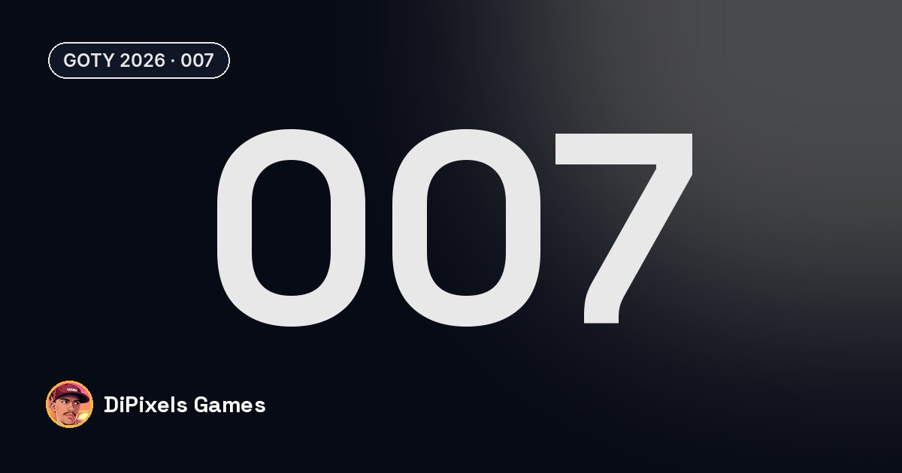

007 First Light: o melhor jogo de James Bond em décadas?

007 First Light marcou a volta de James Bond aos games depois de 14 anos sem um jogo grande da franquia. Feito pela IO Interactive, o estúdio de Hitman, saiu em 27 de maio de 2026 e está entre os indicados a Jogo do Ano.
O que tem de interessante
- A origem do Bond: você joga com um James Bond de 26 anos, antes de ele virar 00. É a história de como ele ganhou a licença pra matar.
- DNA de Hitman: dá pra resolver as situações de vários jeitos, no silêncio ou na porrada, combinando gadgets e cenário. Diferente de Hitman, porém, aqui a história vem primeiro.
- Clima de filme: locais exóticos, gadgets (incluindo um relógio Omega cheio de funções) e um elenco de peso, com Patrick Gibson como Bond e Lenny Kravitz como vilão.
- Visual de ponta: no PC, é uma vitrine pra placas RTX, com suporte a DLSS 4.5 e Multi Frame Generation, e path tracing prometido em atualização.
Tem defeito?
As críticas mais comuns foram as fases de direção, o ritmo do começo e do segundo ato e a inteligência dos inimigos na dificuldade padrão. Nada que derrube o jogo.
Foi bem?
Estreou com nota 88 no Metacritic, acima de Hitman 3, e vendeu 1,5 milhão de cópias em 24 horas, recorde da IO Interactive.
Onde jogar
Saiu para PS5, Xbox Series X|S e PC (Steam e Epic). A versão de Switch 2 foi adiada.
Vale a pena?
Se você gosta de Hitman, de jogos de espionagem ou dos filmes do 007, sim. É um daqueles jogos que funcionam bem tanto pra quem quer ação quanto pra quem gosta de planejar.